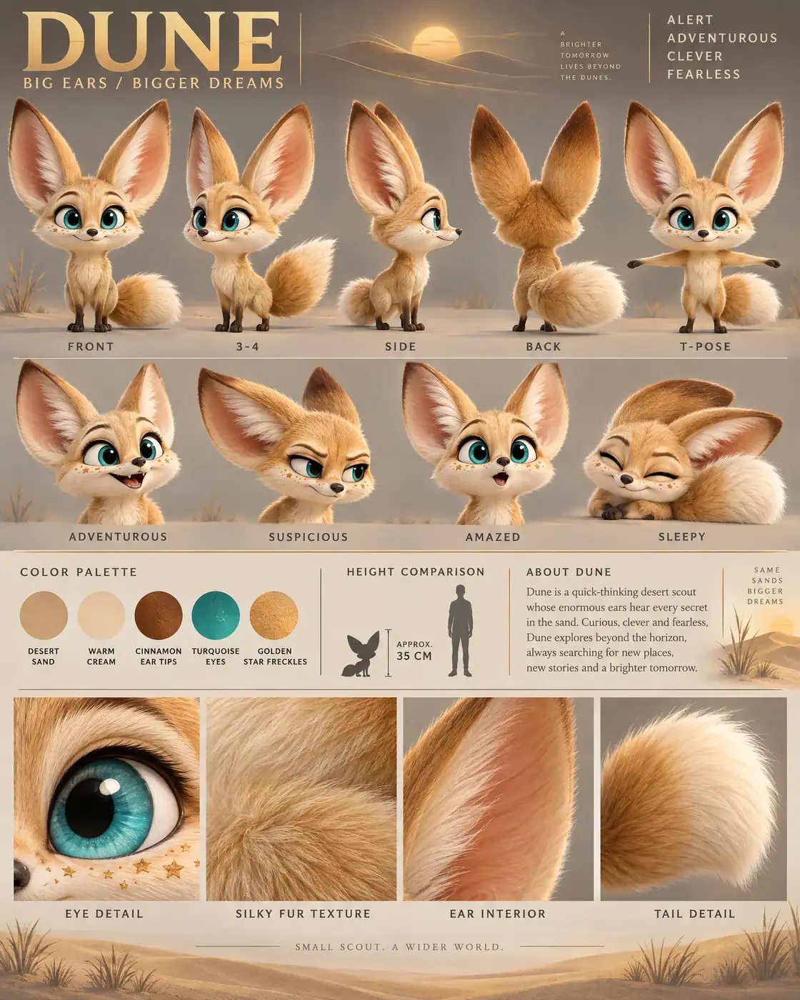

#94 of 100
Dune
Fennec fox
Jungle & SavannaBIG EARSBIGGER DREAMS
- Species
- Fennec fox
- Collection
- Jungle & Savanna
- Height
- 35 CM
- Personality
- ALERTADVENTUROUSCLEVERFEARLESS
- Colour palette
- DESERT SANDWARM CREAMCINNAMON EAR TIPSTURQUOISE EYESGOLDEN STAR FRECKLES
- Expressions
- adventurous confident grin
- suspicious narrowed-eye look
- amazed sparkling-eyed expression
- sleepy curled-up smile
- Detail panels
- EYE DETAIL
- SILKY FUR TEXTURE
- EAR INTERIOR
- TAIL DETAIL
- Character note
- Dune — a quick-thinking desert scout whose enormous ears hear every secret in the sand
Reference sheet prompt
Cute fennec fox named DUNE, with enormous upright ears, oversized turquoise eyes, a tiny charcoal nose, sandy golden fur, cream cheeks and chest, cinnamon ear tips, and tiny star-shaped freckles across the muzzle. A clever desert scout with a long fluffy tail ending in a cream-colored tip high-end 3D animated feature character reference sheet, original character design, polished cinematic family-animation aesthetic, portrait 4:5 presentation board, elegant character-design editorial layout, top-left header reading “DUNE” with the tagline “BIG EARS / BIGGER DREAMS,” four personality traits in the top-right corner reading “ALERT / ADVENTUROUS / CLEVER / FEARLESS” full-body turnaround in the top section — exactly five evenly spaced views: front / 3-4 / side / back / T-pose, enormous ears and fluffy tail clearly visible in every view, identical proportions and markings, clean uppercase labels beneath each pose row of 4 bust-length facial expressions: adventurous confident grin, suspicious narrowed-eye look, amazed sparkling-eyed expression, sleepy curled-up smile, clearly readable ear angles and eyebrow movement color palette swatches with clean uppercase labels: DESERT SAND, WARM CREAM, CINNAMON EAR TIPS, TURQUOISE EYES, GOLDEN STAR FRECKLES neutral warm-grey studio background with subtle Sahara habitat cues: faint golden dune curves, sparse desert grass silhouettes, delicate wind patterns, and a low-contrast sunset-gold accent in the bio panel and detail strip, no full scenic background behind the poses, thin section dividers, soft cinematic 3-point lighting middle information band containing the color swatches, a small fennec silhouette beside a human height comparison, approximate height label “APPROX. 35 CM,” and a short readable character bio describing Dune as a quick-thinking desert scout whose enormous ears hear every secret in the sand bottom row of exactly 4 macro detail panels labeled EYE DETAIL, SILKY FUR TEXTURE, EAR INTERIOR, TAIL DETAIL, showing the turquoise eye, fine sandy fur, soft peach ear membrane, and the cream-tipped plume tail 8k render, consistent chibi proportions, large rounded head, dramatically oversized ears, tiny slender legs, soft silky fur, clean legible typography, no extra characters, no duplicate tails, no busy desert scene, no random symbols, no logos